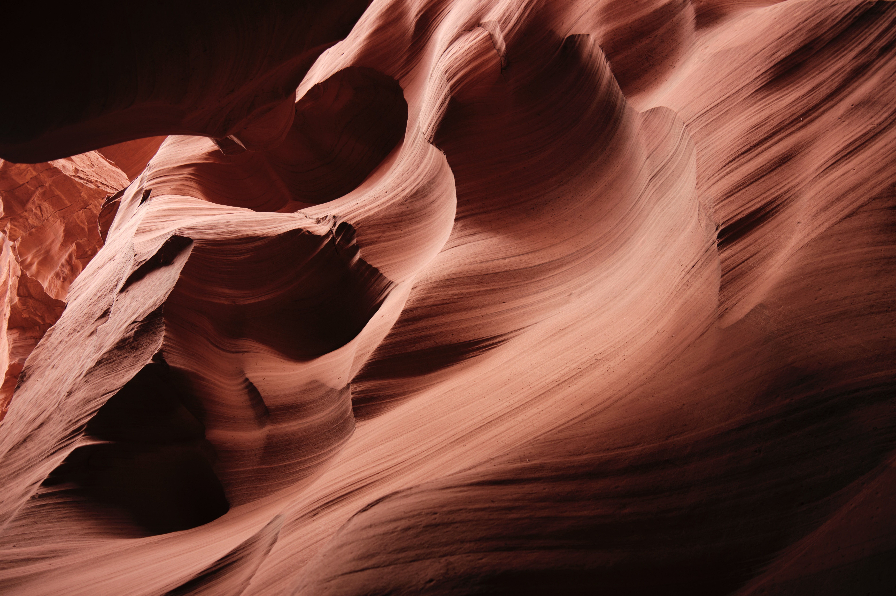

Tiger’s Nest Monastery Bhutan Hike (Paro Taktsang)
The Tiger’s Nest Monastery hike is one of the best things to do in Bhutan, and probably one of the most amazing day hikes anywhere in the …

Seram Island & Ora Beach Travel Guide (Indonesia)
LSeram island in Maluku is one of the best kept secrets of Indonesia. The beautiful Ora Beach Resort has views like Bora Bora, and most of the …

Antelope Canyon X Tour Review, Photos & Experience
We recently traveled through Arizona and tried all of the Antelope Canyon tours over the course of a week, and I would have to say our favorite …